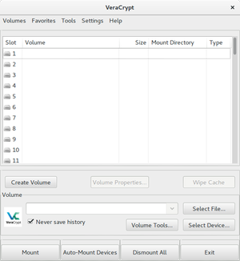

VeraCrypt
Dieser Artikel wurde für die folgenden Ubuntu-Versionen getestet:
Ubuntu 16.04 Xenial Xerus
Zum Verständnis dieses Artikels sind folgende Seiten hilfreich:
Veracrypt  ist eine Software für Linux, Windows und Mac OSX zur Datenverschlüsselung, insbesondere zur vollständigen oder teilweisen Verschlüsselung von Festplatten und Wechseldatenträgern. Das Programm baut auf TrueCrypt 7.1a auf und kann zukünftig ein Nachfolger des TrueCrypt-Projekts sein, da dessen Entwicklung eingestellt wurde. 2016 erfolgte eine Sicherheitsüberprüfung des Programms. Dabei fand man einige Lücken, die teilweise mit der Version 1.19 behoben wurden.
ist eine Software für Linux, Windows und Mac OSX zur Datenverschlüsselung, insbesondere zur vollständigen oder teilweisen Verschlüsselung von Festplatten und Wechseldatenträgern. Das Programm baut auf TrueCrypt 7.1a auf und kann zukünftig ein Nachfolger des TrueCrypt-Projekts sein, da dessen Entwicklung eingestellt wurde. 2016 erfolgte eine Sicherheitsüberprüfung des Programms. Dabei fand man einige Lücken, die teilweise mit der Version 1.19 behoben wurden.
Installation¶
VeraCrypt ist nicht in den offiziellen Paketquellen enthalten und muss manuell oder aus einem PPA installiert werden.
Manuell¶
Achtung!
Fremdsoftware kann das System gefährden.
Die folgende Beschreibung basiert auf der offiziellen Anleitung des Projekts.
Die Archivdatei für Linux herunterladen
Das Archiv entpacken [1]
Installation starten mit dem Befehl [2][3]:
sudo ./PFAD/ZU/veracrypt-VERSION-setup-gui-ARCHITEKTUR
VERSION ist dabei die aktuelle Versionsnummer und ARCHITEKTUR die vorhandene Systemarchitektur (32- oder 64-Bit).
Ein grafischer Assistent wird gestartet. Den Instruktionen folgen.
Möchte man das Programm ohne GUI installieren, so ist dies ebenfalls möglich mit dem Befehl [2][3]:
sudo ./PFAD/ZU/veracrypt-VERSION-setup-console-ARCHITEKTUR
VERSION ist dabei die aktuelle Versionsnummer und ARCHITEKTUR die vorhandene Systemarchitektur (32- oder 64-Bit).
Installation aus PPA¶
Adresszeile zum Hinzufügen des PPAs:
ppa:unit193/encryption
Hinweis!
Zusätzliche Fremdquellen können das System gefährden.
Ein PPA unterstützt nicht zwangsläufig alle Ubuntu-Versionen. Weitere Informationen sind der  PPA-Beschreibung des Eigentümers/Teams unit193 zu entnehmen.
PPA-Beschreibung des Eigentümers/Teams unit193 zu entnehmen.
Damit Pakete aus dem PPA genutzt werden können, müssen die Paketquellen neu eingelesen werden.
Hinweis:
Es kann durchaus sinnvoll sein, sich die im Hinweiskasten verlinkte PPA-Beschreibung anzusehen, da Entwickler diese gerne für Informationen nutzen.
Wurde das PPA aktiviert und die Paketquellen neu eingelesen, kann das Programm mit dem folgenden Paket installiert werden:
veracrypt
 mit apturl
mit apturl
Paketliste zum Kopieren:
sudo apt-get install veracrypt
sudo aptitude install veracrypt
Hinweis!
Fremdpakete können das System gefährden.
Verwendung¶

Nach dem Start [6] von VeraCrypt öffnet sich die Programmoberfläche, aus welcher neue verschlüsselte Volumes erstellt oder vorhandene eingehängt werden können. Die grafische Benutzeroberfläche liegt bisher nur in Englisch vor. Sie orientiert sich in Aussehen und Bedienung stark an TrueCrypt. Ziel des Projekts ist unter anderem, auch TrueCrypt-Container zu öffnen und zu bearbeiten. Einige Funktionen aus TrueCrypt sind allerdings nicht mehr verfügbar, weil sie als Sicherheitslücke angesehen werden.
Auf der VeraCrypt-Homepage gibt es ein Beginner's Tutorial , welches Schritt-für-Schritt erklärt, wie man VeraCrypt-Volume erstellt, einhängt und benutzt.
Hinweis:
Das Beginner's Tutorial und weitere Dokumentation befindet sich nach der Installation ebenfalls im lokalen Dateisystem unter /usr/share/doc/veracrypt/HTML/. Damit ist ein Zugriff auf die Dokumentation auch dann sichergestellt, wenn kein Zugang zum Internet besteht.
Ein neues Volume erstellen¶
Um ein neues Volume bzw. einen neuen Container zu erstellen, wird in der Programmoberfläche ein  -Klick auf den "Create Volume"-Button ausgeführt. Daraufhin öffnet sich ein Assistent, welcher Schritt-für-Schritt durch die Erstellung führt. Eine Übersicht der einzelnen Dialogfenster dieses Assistenten kann dem bereits erwähnten Beginner's Tutorial entnommen werden. Der Benutzer hat beim Durcharbeiten des Assistenten folgende Angaben zu machen:
-Klick auf den "Create Volume"-Button ausgeführt. Daraufhin öffnet sich ein Assistent, welcher Schritt-für-Schritt durch die Erstellung führt. Eine Übersicht der einzelnen Dialogfenster dieses Assistenten kann dem bereits erwähnten Beginner's Tutorial entnommen werden. Der Benutzer hat beim Durcharbeiten des Assistenten folgende Angaben zu machen:
Entscheidung, ob das Volume als Dateicontainer oder mit einer Partition/Festplatte erstellt werden soll
Entscheidung, ob ein Standard- oder Hidden-Volume erstellt werden soll
Angabe des Speicherorts für das zu erstellende Volume
Auswahl der Optionen zur Verschlüsselung (die Vorauswahl sollte für die meisten Anwendungsfälle in Ordnung sein)
Angabe der Volume-Größe (diese kann nachträglich nicht verändert werden)
Angabe eines Passworts und ggf. einer Schlüsseldatei
Auswahl eines Dateisystems für das zu erstellende Volume
Formatierung des Volumes und Ende des Assistenten
Einhängen eines Volumes¶
Bevor Verzeichnisse und Dateien in einem Volume erstellt bzw. bearbeitet werden können, muss das Volume eingehängt werden. Dazu wählt man in der Programmoberfläche einen freien Slot aus, führt anschließend einen -Klick auf "Select File..." bzw. "Select Device..." aus und navigiert zur Container-Datei bzw. zum Verschlüsselten Laufwerk. Mit einem -Klick auf "Mount" wird das Volume/Device eingehängt. Dabei wird das bei der Erstellung vergebene Passwort und ggf. die Schlüsseldatei abgefragt. Der Einhängepunkt kann der Programmoberfläche von VeraCrypt entnommen werden.
Durch einen -Klick auf "Dismount" wird das entsprechende Volume/Device wieder ausgehängt.
Deinstallation¶
Wurde VeraCrypt nicht über die Paketverwaltung installiert, wird zur Deinstallation das folgende Skript ausgeführt:
sudo /usr/bin/veracrypt-uninstall.sh
Links¶
VeraCrypt - Wikipedia
Daten verschlüsseln - Alternativen zu VeraCrypt
Sicherheit
 Übersichtsartikel zur Datensicherheit
Übersichtsartikel zur Datensicherheit
- Erstellt mit Inyoka
-
 2004 – 2017 ubuntuusers.de • Einige Rechte vorbehalten
2004 – 2017 ubuntuusers.de • Einige Rechte vorbehalten
Lizenz • Kontakt • Datenschutz • Impressum • Serverstatus -
Serverhousing gespendet von